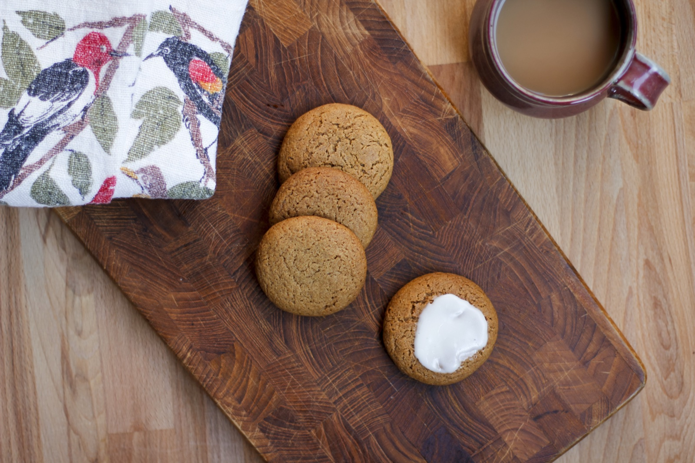
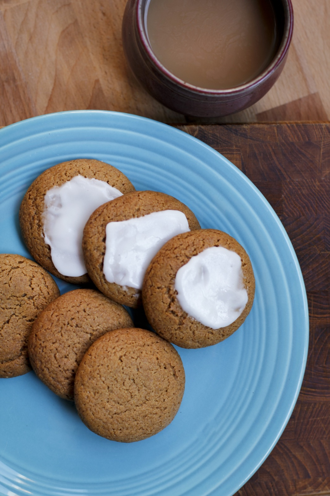

Rosewater and Cardamom Cookies

My favorite desserts during the winter holiday season have a bit of spice to balance their sweetness. Gingerbread and pfeffernüss are common favorites, but when I'm looking for something different to take to party or cookie exchange, these cookies are perfect. The rich flavors of rosewater, cardamom and almond are a wonderful complement to a holiday dinner or simply a cup of black tea and milk on a chilly evening.

Rosewater and Cardamom Cookies
Ingredients:
For the cookies:
2 cups white whole wheat flour
2 teaspoons baking soda
2 1/4 teaspoons ground ginger
3/4 teaspoon ground cardamom
3/4 teaspoon ground cinnamon
1/4 teaspoon freshly ground black pepper
3/4 teaspoon salt
1 cup dark brown sugar, packed
1/2 cup (1 stick) unsalted butter, room temperature
1/4 cup canola oil
1 large egg
1 tablespoon rosewater
some amount of almond extract
For the icing (optional): (double)
powdered sugar
rosewater
almond extract
milk to taste
Directions
Combine the flour, baking soda, spices, and salt and pepper in a bowl. Set aside.
In a large bowl cream the butter, oil, and brown sugar in a bowl until light and fluffy. Add the egg, rosewater, and almond extract and beat until blended.
Add half the dry ingredients to the wet ingredients and mix until just until blended. Repeat with the remaining half of the dry ingredients. Cover the dough and refrigerate for 1 hour.
Meanwhile, preheat the oven to 350F. Prepare 2 cookie sheets by covering with a silicone mat or spraying with nonstick cooking spray.
Use your hands to for the dough into 3/4 inch-sized balls. Place on the prepared sheets 2 to 3 inches apart.
Bake the cookies for about 15 minutes, or until they are cracked on top but still soft to the touch. Allow the cookies to cool on the baking sheets for 1 minute before transferring the cookies to a wire rack with a spatula.
Cool completely before icing.
In a small bowl, combine the powdered sugar, rosewater, and almond extract. Blend thoroughly with a fork to remove any clumps of powdered sugar. If the icing is too thick, add a teaspoon of milk at a time until you achieve the desired consitency.
Use a butter knife or a cake icing spatula to frost each cookie.